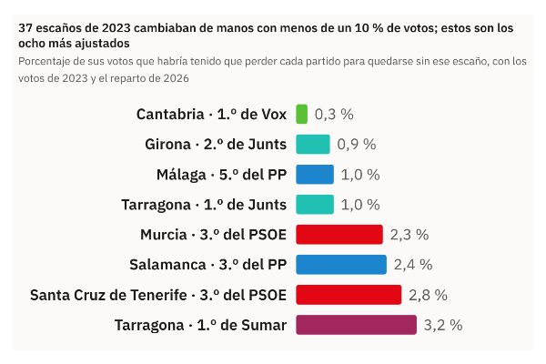
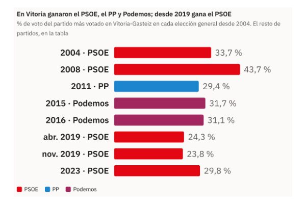

Actualidad · Encuestas de hoy · España
Encuestas elecciones generales 2026, hoy 20 de noviembre: el PP gana en las cinco, por entre 2,0 y 4,6 puntos
Todas son de antes del debate. EM-Analytics recorta un punto la distancia y 40dB. la mantiene en 2,0. La mediana de las encuestas, en 4,3 a favor del PP.
Por Nacho G. del Álamo · · Actualizado el
Cada párrafo lleva una etiqueta: dato (cifra comprobable con las fuentes), patrón (relación que se repite, sin afirmar la causa), hipótesis (explicación posible, sin dos fuentes independientes) o contexto (hechos y declaraciones publicados por otros, enlazados). Cómo verificamos
DatoLas cinco encuestas de las elecciones generales publicadas desde ayer por la mañana dan ganador al PP, con entre 2,0 y 4,6 puntos de ventaja sobre el PSOE. Todas se hicieron antes del debate de anoche entre Pedro Sánchez y Alberto Núñez Feijóo. La que más recorta la distancia es EM-Analytics para Electomanía: de 3,8 a 2,8 puntos (PP 30,4 %, PSOE 27,6 %). El tracking de 40dB. para El País y la SER la mantiene en 2,0 (PP 32,2 %, PSOE 30,2 %); Sigma Dos para El Mundo la deja en 3,9, y Data10 para OKDiario, en 4,6, la más amplia de las cinco.
DatoLa quinta es la primera encuesta de Public First para Politico en esta campaña, con entrevistas del 15 al 17 de noviembre: PP 29,5 %, PSOE 27,2 % y Vox 19,6 %, 2,3 puntos entre los dos primeros.
40dB. · El País / Cadena SER · campo hasta el 19 nov
Cambio frente a su entrega anterior, con campo hasta el 18 nov
EM-Analytics · Electomanía · campo hasta el 18 nov
Cambio frente a su entrega anterior, con campo hasta el 17 nov
Sigma Dos · El Mundo · campo hasta el 18 nov
Cambio frente a su entrega anterior, con campo hasta el 17 nov
Data10 · OKDiario · campo hasta el 19 nov
Cambio frente a su entrega anterior, con campo hasta el 18 nov
DatoVox sube en 40dB. por segunda entrega seguida, del 17,2 al 17,6 %, después de bajar en las cinco anteriores. En Sigma Dos baja 0,3 puntos, hasta el 19,4 %; en EM-Analytics baja 0,2, hasta el 18,7 %, y en Data10 repite, en el 19,4 %.
DatoEn escaños, contando los de UPN-PP con el PP, PP y Vox suman 192 en 40dB. (132 del PP, 2 de UPN-PP y 58 de Vox, según su informe), los mismos que ayer; 187 en EM-Analytics y entre 184 y 195 en Sigma Dos, sumando sus horquillas. Las tres, por encima de la mayoría absoluta de 176.
Frente a la mediana de las encuestas
DatoLa mediana de la última encuesta de cada una de las 18 encuestadoras de las tres últimas semanas, la que resume nuestra página de encuestas de las elecciones generales 2026, da al PP el 31,4 %, al PSOE el 27,1 % y a Vox el 19,0 %: 4,3 puntos entre PP y PSOE. Cuatro de las cinco encuestas de hoy ven la carrera más ajustada que esa mediana; solo Data10 la ve más abierta.
Ver la tabla
| PP | PSOE | Vox | |
|---|---|---|---|
| 40dB. | 32,2 | 30,2 | 17,6 |
| Public First | 29,5 | 27,2 | 19,6 |
| EM-Analytics | 30,4 | 27,6 | 18,7 |
| Sigma Dos | 31,0 | 27,1 | 19,4 |
| Data10 | 31,5 | 26,9 | 19,4 |
| Mediana | 31,4 | 27,1 | 19,0 |
Lo que estas encuestas no dicen
ContextoNinguna mide todavía el efecto del debate: la de campo más reciente, la de 40dB., cerró sus entrevistas el jueves 19. Con 2.000 entrevistas, sus 2,0 puntos entre PP y PSOE quedan dentro del margen de error de esa distancia, de unos ±3,5 puntos: es un empate técnico, aunque el PP vaya por delante. Electográfica, que recoge la de Public First, califica también de empate estadístico sus 2,3 puntos.
ContextoEsta pieza recoge las encuestas publicadas hasta las 8.30 de este viernes. La ley prohíbe publicar encuestas desde el martes 24 de noviembre, así que el lunes 23 es el último día. Quién ganó el debate según los sondeos se cuenta en la pieza del debate Sánchez Feijóo.
Preguntas frecuentes
¿Qué dicen las encuestas de las elecciones generales hoy, 20 de noviembre?
Data10: PP 31,5 %, PSOE 26,9 %. Sigma Dos: PP 31,0 %, PSOE 27,1 %. EM-Analytics: PP 30,4 %, PSOE 27,6 %. Public First: PP 29,5 %, PSOE 27,2 %. 40dB.: PP 32,2 %, PSOE 30,2 %.
¿Quién gana las elecciones generales según las encuestas?
El PP, en las cinco publicadas desde ayer, con entre 2,0 y 4,6 puntos de ventaja. La mediana de las 18 encuestadoras le da 4,3 puntos de ventaja.
¿Las encuestas de hoy recogen el efecto del debate?
No. Todas se hicieron antes del debate del jueves 19 por la noche.
¿Hasta cuándo se pueden publicar encuestas?
Hasta el lunes 23 de noviembre. La ley electoral prohíbe publicarlas en los cinco días anteriores a la votación, desde el martes 24 hasta el cierre de los colegios el domingo 29.
Encuestas elecciones generales 2026 · Las encuestas de ayer, 19 de noviembre · Debate Sánchez Feijóo
Método y fuentes
- Qué se compara
- Las encuestas de las elecciones generales publicadas desde las 8.30 del 19 de noviembre hasta las 8.30 del 20 (40dB., Public First, EM-Analytics, Sigma Dos y Data10), cada una frente a su entrega anterior y frente a la mediana de la última encuesta de cada encuestadora de las tres últimas semanas, la de mapaelectoral.es/encuestas.
- Límites
- Todas se hicieron antes del debate del 19 por la noche. Son trackings o encuestas que acumulan entrevistas de varios días: cada entrega comparte la mayoría con la anterior. El margen de la distancia entre dos partidos supone muestreo aleatorio simple. Los escaños de UPN-PP se cuentan con el PP en todas las sumas de PP y Vox. Fuera de la mediana y de la pieza: la fila «Metroscopia 19-11» de Wikipedia, que es un ejemplo hipotético de Ignacio Urquizu en laSexta y no una encuesta, y la segunda copia de la encuesta de Public First para Politico.
- Cómo se calcula
- Ventaja: estimación del primero menos la del segundo, en puntos. Margen de la distancia entre dos partidos de una encuesta: dos errores típicos, raíz de (p1 + p2 − (p1 − p2)²)/n. Mediana: mapaelectoral.es/encuestas (encuestas/src/construir.py, medianas()). Script: encuestas_2011.py, en actualidad/src/resumenes. Cifras reproducibles con los scripts del expediente de la pieza. Metodología de Actualidad · Metodología del Atlas
- Fuentes
- 40dB. para El País y la SER, tracking de campaña, día 8 (informe, 19-11-2026)
- Electográfica, 40dB. (19-11-2026)
- El Mundo, Sigma Dos (19-11-2026)
- Electomanía, EM-Analytics (19-11-2026)
- OKDiario, Data10 (19-11-2026)
- Politico, encuesta de Public First (19-11-2026)
- Electográfica, Public First (19-11-2026)
- Wikipedia, Opinion polling for the 2026 Spanish general election (CC BY-SA 4.0)
- Mapa Electoral, encuestas de las elecciones generales 2026
- Autoría
- Nacho G. del Álamo
- Revisión de datos y texto
- Nacho G. del Álamo, 20 de noviembre de 2026
- Publicado · actualizado
- 20 de noviembre de 2026 · 20 de noviembre de 2026, a las 08.30
- Correcciones
- Ninguna.
Serie «Camino al 29N»: 160 piezas
- Los once municipios que visitan los candidatos el primer día de campaña, fuera de Madrid y Barcelona, cambiaron de ganador entre 2019 y 2023
- Dos de los cuatro del debate de laSexta no se presentan el 29N: ni Cuerpo ni Bustinduy están en ninguna lista
- De los 25 convocados de De la Fuente nacidos en España, 15 nacieron donde ganó el PSOE en 2023 y 8 donde ganó el PP; en Puente Genil, el PP ganó por 31 votos
- Feijóo hace campaña con UPN en Pamplona, donde el PSOE ganó 77 de las 151 secciones en 2023; con UPN y PP sumados, se habría quedado en 49
- Al PP le faltaron 9.793 votos en 2023 para recuperar un diputado en Gipuzkoa; Feijóo arropa hoy a su candidato, atacado en Hernani
- Si la abstención fuera un partido, en 2023 habría quedado por delante del ganador en más de la mitad de las grandes ciudades y en la mitad de las secciones de España
- Voto por correo para las elecciones generales del 29N: el plazo para pedirlo acaba el jueves 19; en 2023, una de cada tres solicitudes llegó en las dos últimas semanas
- Elecciones generales: una de cada tres secciones cambió de ganador entre 2019 y 2023
- Debate Sánchez Feijóo: hora, dónde verlo y quién gana el cara a cara
- Elecciones generales: en Gijón, Vox sacó en 2023 su mejor resultado en Somió, el barrio más rico: 17,0 %
- Estás aquíEncuestas elecciones generales 2026, hoy 20 de noviembre: el PP gana en las cinco, por entre 2,0 y 4,6 puntos
- Veda de encuestas: hasta cuándo se pueden publicar las del 29N
- Cómo votar en las elecciones generales del 29N: horario, qué llevar y cómo saber tu colegio
- A qué hora se sabrán los resultados de las elecciones generales del 29N
- Encuestas Andorra 29N: qué son las encuestas prohibidas y qué dice la ley
- Después de las elecciones generales del 29N: cuándo se constituyen las Cortes y los plazos de la investidura
- Elecciones generales del 29N en cifras: electores, escaños, candidaturas y mesas de cada provincia
- Escrutinio de las elecciones generales del 29N: cómo seguirlo en directo y cuándo es definitivo
- Voto en blanco y voto nulo en las elecciones generales del 29N: qué cuenta y a quién afecta
- Programa electoral de PP, PSOE, Vox y Frente Amplio: qué propone cada uno el 29N
- Ver las 160 piezas de la serie
Sigue leyendo

Crónica del sábadoLa víspera del 29N: pueden votar 38.728.356 personas y 37 de los 350 escaños de 2023 cambiaban de manos con menos de un 10 % de votos
Real Madrid-AlavésReal Madrid-Alavés: en Vitoria, el PSOE ganó en 128 de las 166 secciones, pero en Mendizorrotza, el barrio del estadio del Alavés, el PP sacó el 46,5 % El debate, con datosEl debate a cuatro, comprobado con datos: de cinco frases de Sánchez, Feijóo, Abascal y Colau, solo una es exacta
El debate, con datosEl debate a cuatro, comprobado con datos: de cinco frases de Sánchez, Feijóo, Abascal y Colau, solo una es exacta Camino al 29NVotar desde el extranjero el 29N, ley en mano: la urna de los consulados cierra el jueves 26 y esos votos no se cuentan hasta el viernes 4 de diciembre
Camino al 29NVotar desde el extranjero el 29N, ley en mano: la urna de los consulados cierra el jueves 26 y esos votos no se cuentan hasta el viernes 4 de diciembre Los pueblos que siempre aciertanLos pueblos que siempre aciertan se juegan la racha por un puñado de votos: en Ayerbe, el PP ganó en 2023 por 2
Los pueblos que siempre aciertanLos pueblos que siempre aciertan se juegan la racha por un puñado de votos: en Ayerbe, el PP ganó en 2023 por 2 El debate a cuatroDebate a cuatro: hora, dónde verlo y en qué orden hablan Sánchez, Feijóo, Abascal y Colau
El debate a cuatroDebate a cuatro: hora, dónde verlo y en qué orden hablan Sánchez, Feijóo, Abascal y Colau